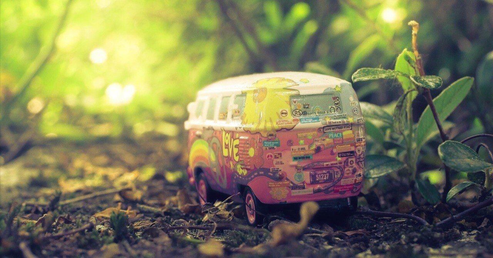

たとえ大人になって変わり映えのない日々を過ごしていても、人は小さいながらに変化を続けている。
最近はそんな風に捉えている。相変わらず僕にとっては時間に追われるような毎日だけど、以前とは異なり、心身ともに前のめりで目の前の物事に集中できているからだろうか。
今年に入ってからは特に、周りにいてくれる人たちと前向きに付き合いができているような感覚がある。
やはり新しい出会いは大きい。30歳になって1年が経過し、あっという間に年を重ねてしまったことに驚きつつも、そこに憂いはなく、むしろ｢これからどうなっていくのだろう？｣と、ある意味他人事のような一面も持ち合わせながら、この先も歩んでみたいと思っている。
また、趣味や目標を持つことは、心も体も若返らせてくれる。
それは別にかつて触れていたものでも構わない。今時点で習慣化しているものとは違う何かに時間を使い、意識的に自分を変えていく。ちょっとした工夫で人生の舵はいかようにも方角を変えられる。重かった腰を上げてから、ようやくそんなことに気がついた。
25歳の頃の恋心をようやく忘れ始めてきた。
これまであまり声を大にしてはこなかったが、実は僕にとって、これはとても大きな出来事だ。
あの頃に抱いていた「これ以上の人に出会える気がしない」という想いは、ある種の特別感はあったものの、それはつい最近まで自らの首を絞め続けてきた。
しかし、自然と新しい目標に向かっていくうちに変わっていったのか、そうした過去と決別したことで、今はまだ見ぬ未来を描くために心の内側から生まれ変わってきた感覚すらあるのだ。
それに、協調性について勝手に育まれてきたからか、ハナから僕を嫌うような人の機嫌をとることで心をすり減らしてきた仕事人生においても、最近は(もちろん組織内での責務を果たしたうえで)自分らしく振る舞うことで気にならなくなった。以前していた態度よりもずっと清々しいし、何より自信にもなる。
過ぎ去った時間は取り戻せないし、後悔なんてし始めると終わりが見えないほどの道のりになるが、今は色のない未来に続く道を進むことだけを考えていたいと思う。
そして、その先々で出会った人たちとの縁を大切にしながら、自らが夢見る場所を目指していきたい。
そんなことを考えている自身をふと俯瞰で見た時に、もしかしたら僕たちは“世界”という壮大な箱庭の中を生きているだけなのかもしれないと思えた。
傍から見れば、その中にあるものは等しく平等。しかし、実際にそこに存在するものの気持ちは当人にしかわからない。そんな世界を形作る箱庭に、替えの利かない僕たちひとりひとりが生きている。そして、皆が皆、それぞれの理想を詰め込んだ箱庭(＝心)を持っていて、それらの集合体がこの世界なのかもしれないと。
箱庭とは本来は作り手個人の心を映すものだが、“世界”という箱庭は、その中を生きる僕たちで形成していくしかないのだと思う。その過程で、僕たちは誰かに恋したり、はたまた嫌いな人ができてしまったり、ライバルや唯一の友に出会えたりする。それはきっと、未完なこの世界を作っていくための仲間探しみたいなものかもしれない。
そして、従来の箱庭よろしく、たとえその様を正体の掴めない何者かに見張られていて、不運にもそれが普段の生活に悪い影響をもって介入する場面があっても、きっと僕たちの意思までは奪えないはずだ。
それが運命や定めというのなら構わない。でも、それで諦めるかどうかはその時の自分に任せてほしい。
そんな風に強気で生きていくだけで、今まで曇っていたはずの視界がクリアになったような気がしてくる。別に勘違いでもいいから、この気持ちを持ち続けていれば、大事な時に追い風になってくれるかもしれない。根拠のない希望ほど期待に裏切られた感覚は薄いのだから、そう思っていてもきっと損はないはずだ。
壮大な箱庭で生きながら、胸の奥には二つとない自分だけの箱庭を。日々少しずつ変わっていく心を映すように、今いる仲間たちと協力しながら、その中に置きたいものを選び、時には自らの手で作っていく。
縛り続けるだけの過去を手放しそれに邁進していければ、自ずと明るい未来は訪れるだろう。今はただ、そんな予感がしているのだ。